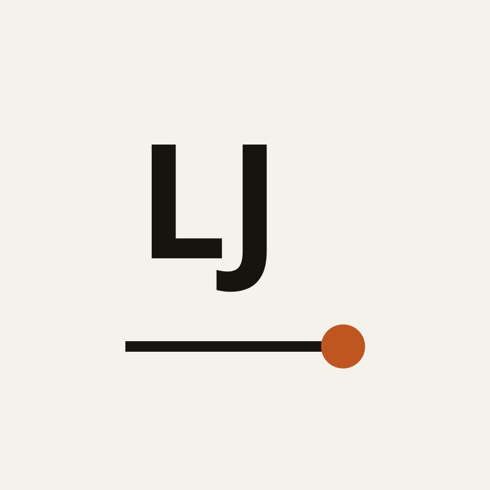

做了20多年供应链，我越来越觉得企业缺的不是方法
企业很多时候并不是缺方法，而是缺少把方法变成结果的过程。以供应商交付延期为例，讲清楚为什么「开会+增加KPI」解决不了问题。

21 年国际物流与供应链经验。从真实业务问题出发，探索复杂业务的分析、决策与 AI 落地。
企业很多时候并不是缺方法，而是缺少把方法变成结果的过程。以供应商交付延期为例，讲清楚为什么「开会+增加KPI」解决不了问题。
从「把事情做好」，到成为组织的「异常吸收器」。真正让人失去生活的，不是多工作两小时，而是不知道工作什么时候才算结束。
如果公司不再安排固定岗位，而是把任务放到「任务大厅」让员工认领，会怎么样？探索 AI 时代个人价值与工作的重构。
一批欧洲发往台湾的货物在海关被扣留。在事实确认之前，先问自己五个问题，比急着「找货代催」更接近问题的本质。